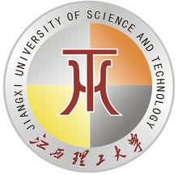

江西理工大学应用科学学院（Applied Science College of Jiangxi University of Science and Technology）坐落于千里赣江第一城——江西省赣州市。该院于2001年8月1日经江西省人民政府批准设立，系江西省首批批准设立的八所独立学院之一，也是首批经国家教育部确认的249所独立学院之一。学院原名南方冶金学院西点学院，2002年2月9 日和2004年5月18日分别更名为南方冶金学院应用科学学院、江西理工大学应用科学学院；学院隶属于江西理工大学，由江西理工大学按新机制、新模式创建的一所全日制普通本科院校。

江西理工大学应用科学学院欢迎您